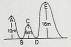
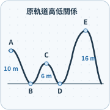
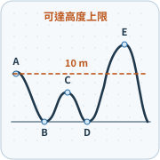
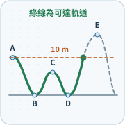
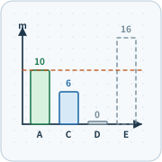
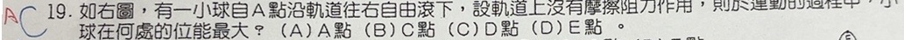
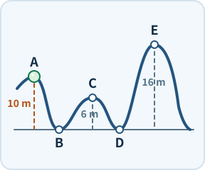
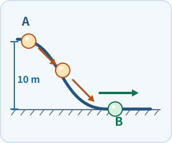
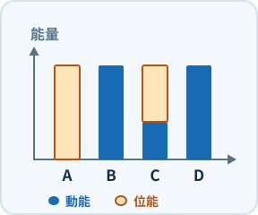
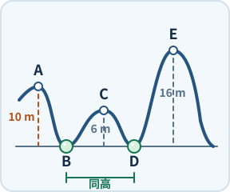

完整原題
作答所需文章／材料
如右圖，有一小球自 A 點沿軌道往右自由滾下，設軌道上沒有摩擦阻力作用。
理化第19題｜軌道上可到達的最高處
理化第20題｜軌道上何處動能最大
先想一想，再查看答案、解說與原圖
理化第19題｜軌道上可到達的最高處
分享原卷｜原卷第19題 · 首次出題日期 2026-11-27 · 原AI對話 ↗
詳細說明與解題步驟
以水平基線為重力位能零點，越高則重力位能 mgh 越大。小球從 10 m 高的 A 點由靜止出發，題設沒有摩擦阻力，也沒有額外能量輸入，因而力學能等於放開時的重力位能 mg×10 m。後續能爬到的高度以 10 m 為上限，無法到達 16 m 的 E 點。
(A) A 點的 10 m 是小球可達的最高高度，位能最大。小球若沿末段爬回 10 m，會有同樣大的位能。
(B) C 點高 6 m，低於 A。
(C) D 點在水平基線，重力位能最小。
(D) E 點雖然高 16 m，卻超過小球能達到的上限。
新製教學示意

逐一讀取軌道高度
A 高 10 m、C 高 6 m、E 高 16 m；B、D 在基線上。
新製教學示意

起點的能量限制高度
由靜止出發，總力學能只容許小球到 10 m 高度。
新製教學示意

追蹤到實際可達處
小球會先過 B、C、D，再沿上坡爬回 10 m，無法到 E。

④ 軌道上可到達的最高處
(A) A 點
- A 的 10 m 高於 C 和 D。E 的 16 m 雖高，卻不在路徑上。
核對註記：已核對分享對話上傳的原卷。卷首為臺北縣立板橋國民中學九十五學年度第一學期九年級第三次自然與生活科技領域段考；未標確切考試日期，採首次對話的台灣日期。
原圖（僅本題）

理化第20題｜軌道上何處動能最大
分享原卷｜原卷第20題 · 首次出題日期 2026-11-27 · 原AI對話 ↗
逐項解析
| 選項與原句 | 判讀 | 句意與判斷理由 |
|---|---|---|
| (A) A點 | 不選 | A 點是 10 m 高的起點，依題意由靜止開始，動能為零。 |
| (B) B點 | 應選 | B 點在底線上，高度最低，動能最大。 |
| (C) C點 | 不選 | C 點高 6 m，比 B 點高，動能比 B 點小。 |
| (D) E點 | 不選 | E 點高 16 m，高於自 A 點起始的 10 m，小球無法到達。 |
詳細說明與解題步驟
從 A 點自由滾下，依題意沒有摩擦造成的能量損失。以 B、D 所在的底線為零高度，重力位能 U＝mgh。當高度下降，減少的重力位能轉為動能，因此小球能到達的最低位置動能最大。
(A) A 點是 10 m 高的起點，依題意由靜止開始，動能為零。
(B) B 點在底線上，高度最低，動能最大。
(C) C 點高 6 m，比 B 點高，動能比 B 點小。
(D) E 點高 16 m，高於自 A 點起始的 10 m，小球無法到達。
D 點也在同一條底線上，動能與 B 點相同。四個選項中只有 B 點列為最低且可到達的位置。

沿原卷找各點高度
從 A 點 10 m 高處自由滾下。C 點高 6 m，E 點高 16 m；B、D 都在底線。

下降時動能增加
沒有摩擦阻力造成的能量損耗。從 A 下降到 B，減少的重力位能轉為動能。

比較可到達處的能量
A、B、C、D 的動能加位能相同。E 高於起點，沒有足夠力學能到達。

④ 軌道上何處動能最大
(B) B點
- B、D 同高且都位在底線，動能同為最大。選項中只有 B 點。
核對註記：已核對使用者上傳的原卷、四個選項及紅筆訂正。無可確認的實際考試日期，使用首次提問的臺灣日期；冊次與章節歸綜合。承接前題的必要條件與原卷圖另列於作答區。